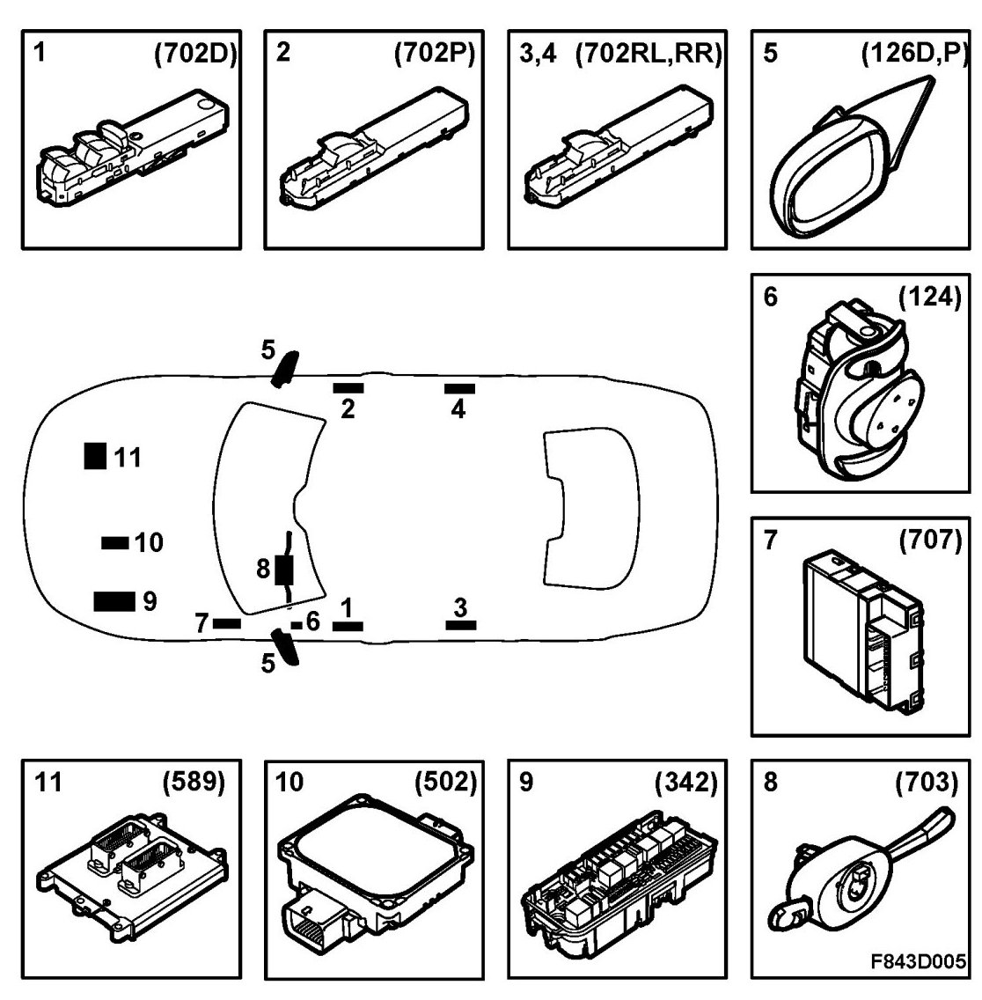
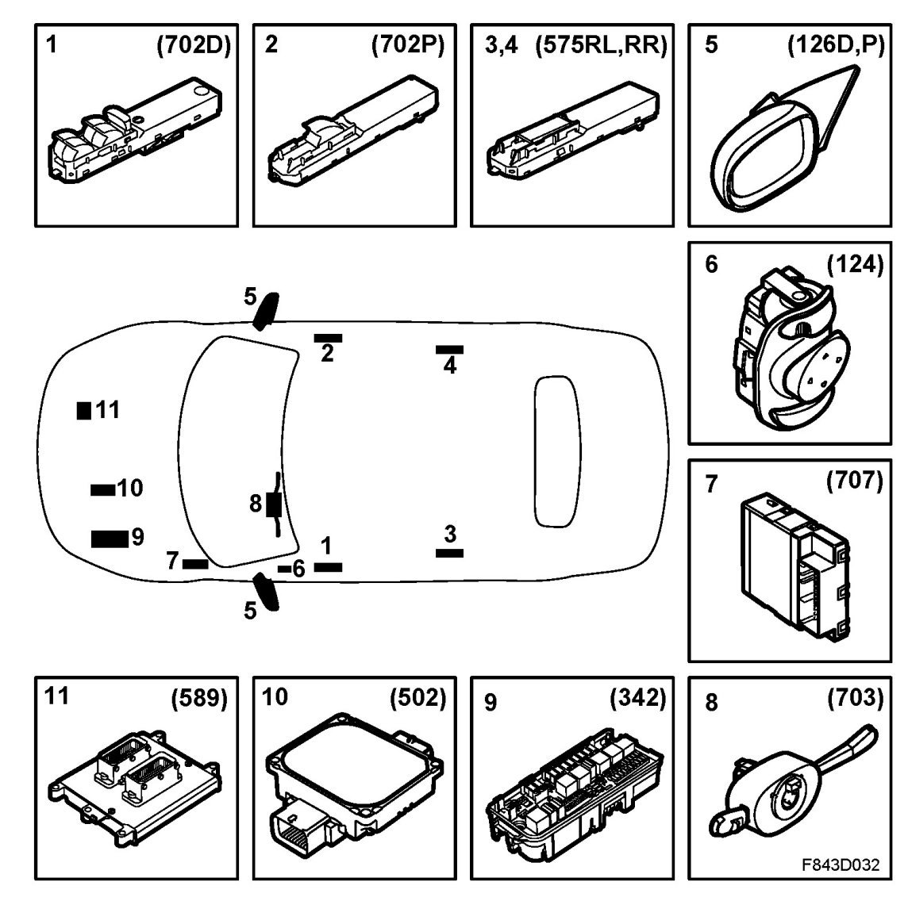

Door Mirrors, Main Components
Door Mirrors, Main Components
4D

CV

1. Driver's door module, DDM (702D)
2. Passenger door module, PDM (702P)
3. 4D: Rear left door module, RLDM (702RL)
CV: Rear left door module, RLDM (575RL)
4. 4D: Rear right door module, RRDM (702RR)
CV: Rear right door module, RRDM (575RR)
5. Motor, electrically adjustable door mirror (126D, 126P)
6. Switch, electrically adjustable door mirror (124)
7. Control module, BCM (707)
8. CIM (703)
9. Underhood electrical centre, UEC (342)
10. Control module, TCM (502)
11. ECM